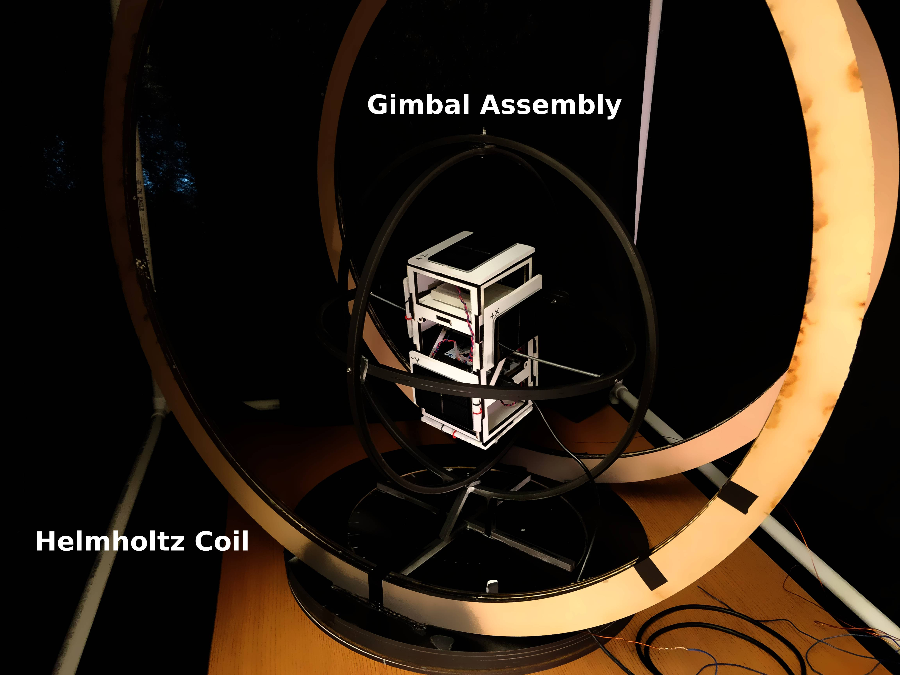
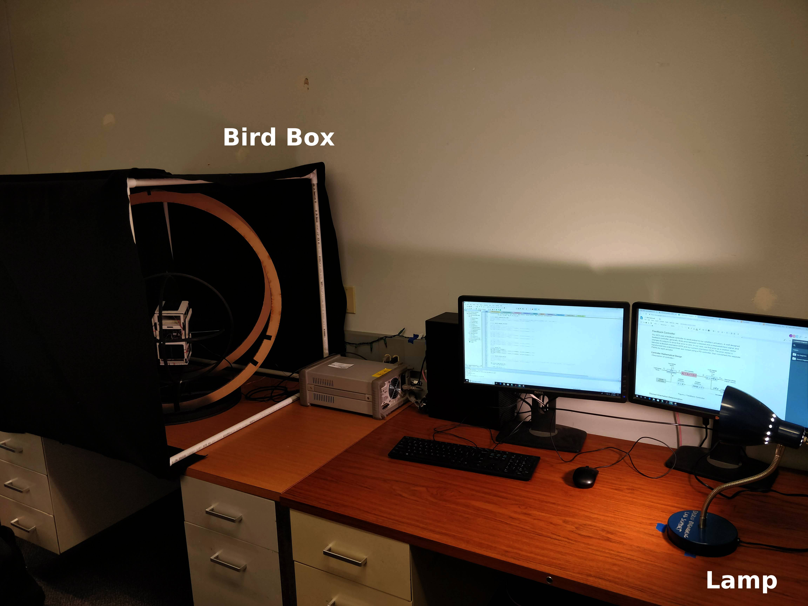

- Generated by
 1.8.15
1.8.15
|
SlugSat ACS
0.2.0
This repository contains source code for the Attitude Control System (ACS) onboard SlugSat.
|
The test fixture is used to prototype and test the accuracy of SlugSat's solar vector determination and overall attitude determination algorithms. The fixture hardware is a combination of four parts: an internal 2U chassis, a 3-axis gimbal, a Helmholtz coil, a dark box known within our team as the "bird box." The 2U chassis fits inside the gimbal to form the gimbal assembly. This assembly sits within the Helmholtz coil, which in turn sits inside of the bird box. The Helmholtz coil is used to adjust the magnetic field inside of the test fixture, while a lamp is used in conjunction with the bird box to simulate light from the Sun. The hardware is meant to be used with embedded software designed to run on the fixture's microcontroller (a NUCLEO-F103RB) and in parallel with data analysis software on the adjacent workstation.
 The light marks on the base of the Helmholtz coil are meant to help measure yaw and calibrate angle of incidence. The gimbal should be placed such that its front legs are on top of the large 45 degree marks on the base (equadistant from the 1" foamcore piece at the front of the Helmholtz coil base). The lamp should be moved so that the shadow from the foamcore piece points at the center of the gimbal base. Yaw can then be measured by comparing the position of the mid-sized gimbal ring to the lines on the base using a ruler or other right angled straight edge. Pitch and roll can be measured using a protractor. These measurement methods are painstaking and not very reliable, so a better method will likely have to be developed.
Tighten the nuts on the gimbal joints if more friction is desired.
1.8.15